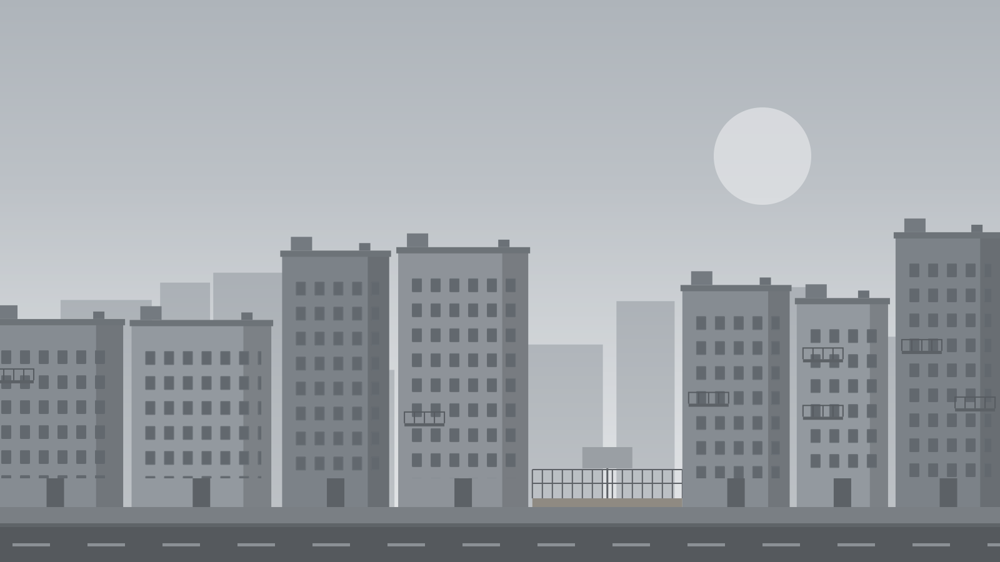

Fresh Food
Urban gardening allows people to grow fresh fruits, vegetables, and herbs closer to home.

Benefits
A few planters might not look like much, but city gardens change what people eat, how streets look and how neighbors connect.
Four big wins
Hover over or tap each card. These are the main reasons people start gardens in cities.
Urban gardening allows people to grow fresh fruits, vegetables, and herbs closer to home.
Gardens add plants and greenery to city spaces that may otherwise be covered in buildings or pavement.
Plants can support pollinators, and locally grown food can reduce some transportation needs.
Community gardens give neighbors opportunities to work together, learn new skills, and share food.
Before and after
Drag the handle, or use the arrow keys, to compare the same street before and after urban gardening.

 Before
After
Before
After
Fun facts
Press a card to flip it. Every fact comes from a trusted source listed on the Get Started page.